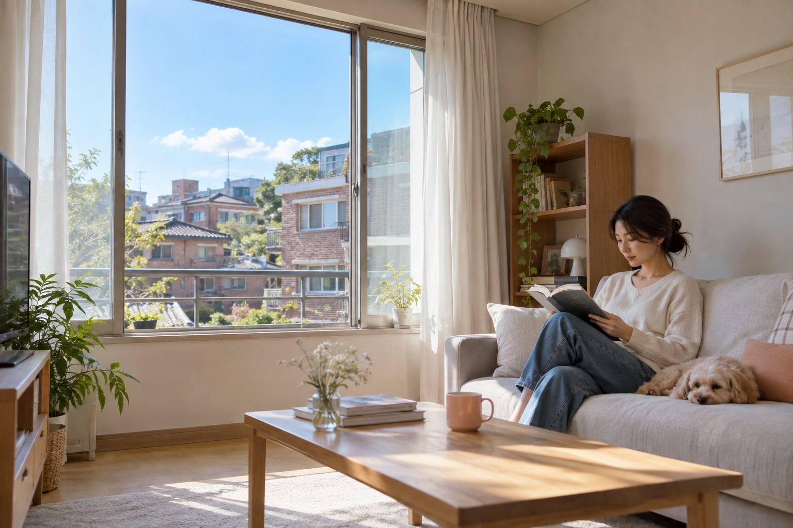
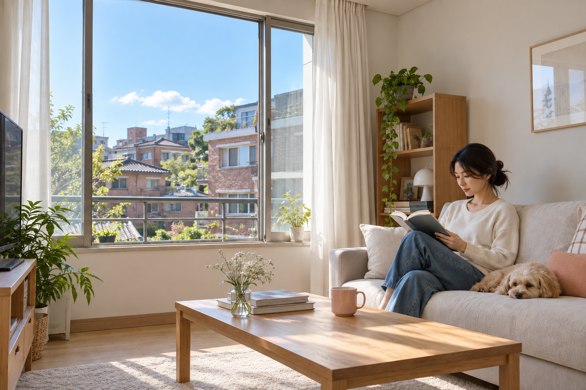
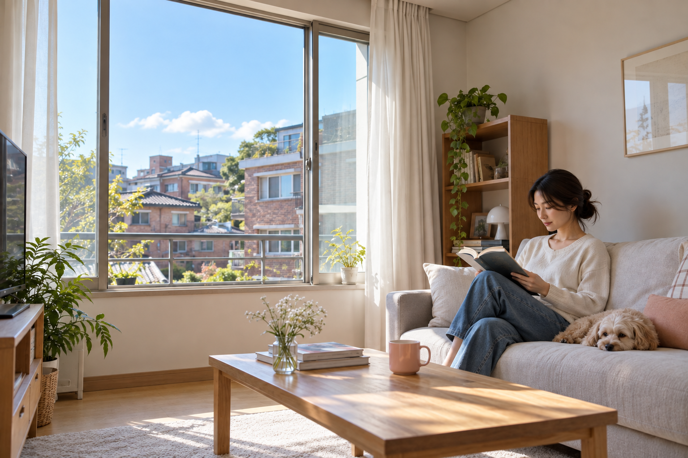
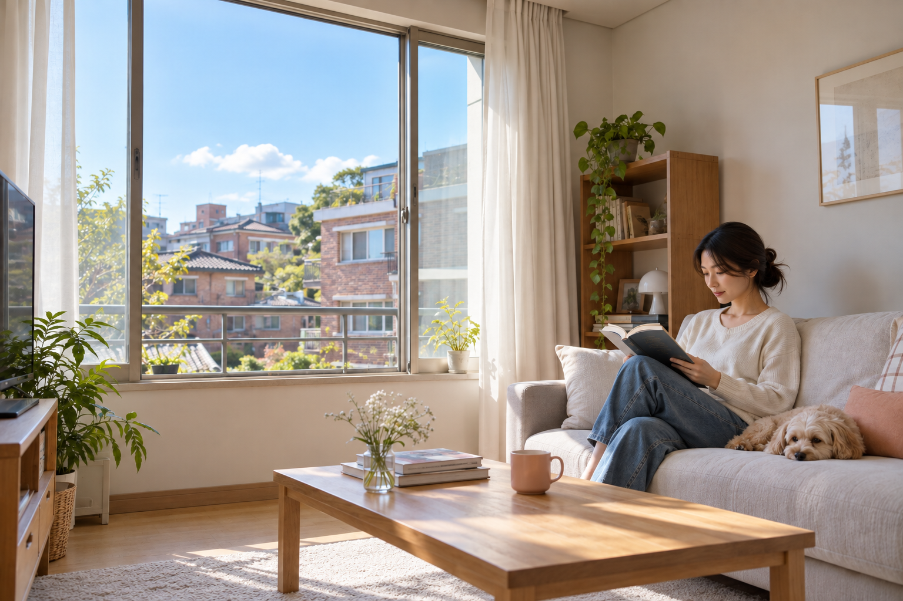
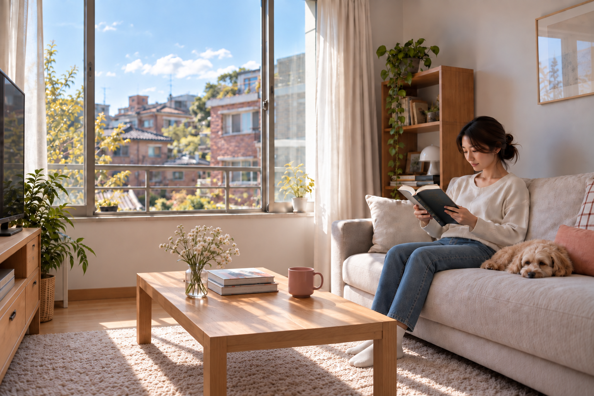
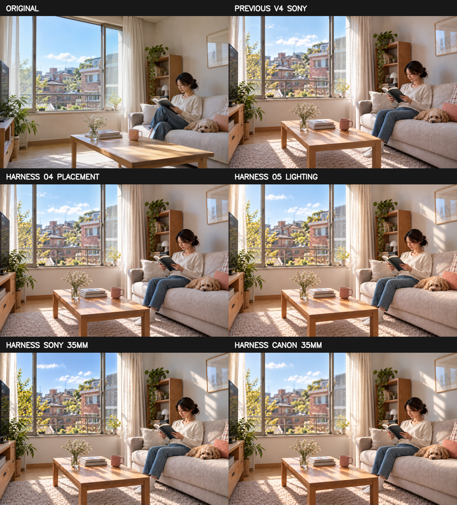

VERSION DIFFERENCE
수정이 늘수록 항상 좋아지지는 않았습니다.
| 단계 | 개선 | 손실·한계 |
|---|---|---|
| v1 | 테이블 구조·접지·수직선 | 얼굴·강아지·소품 변화, 과도한 선명화 |
| v2 | 원본 유지, 자연스러운 35mm 감각 | 카메라 물리 재현이 아닌 grading 해석 |
| v3–v4 | 포즈·책–손 연결 | 원본 충실도 저하, 기술 투시 미통과 |
| Harness | 오류 단계와 카메라 룩 분리 | 최종 생성기가 승인 좌표를 이동 |
현재 등급은 Controlled 후보입니다. Geometry-verified로 부르지 않습니다.